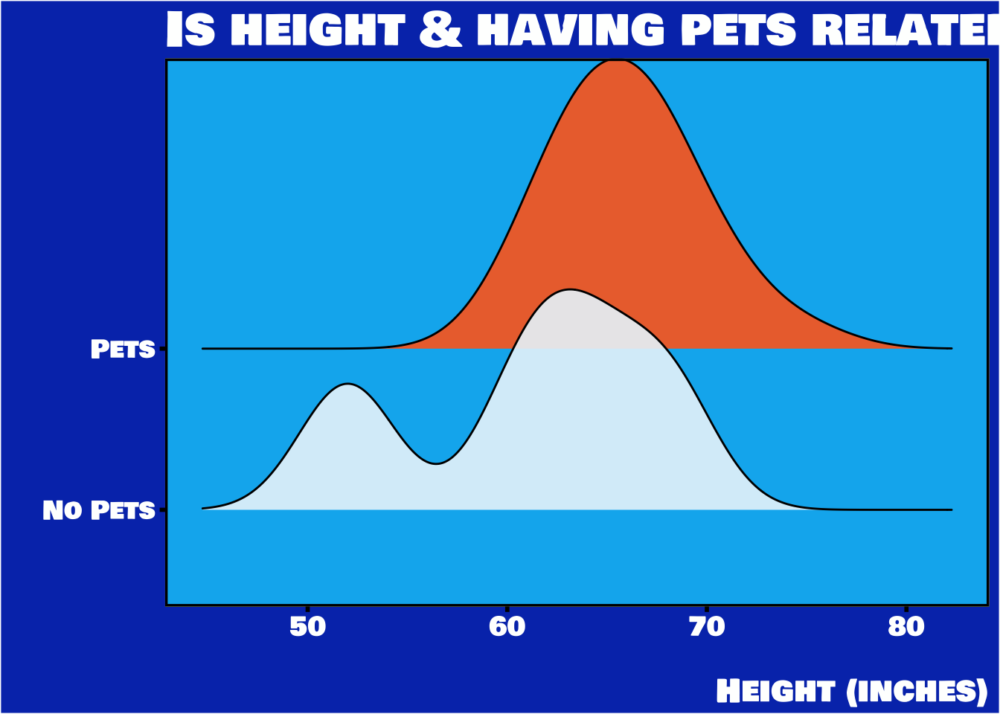
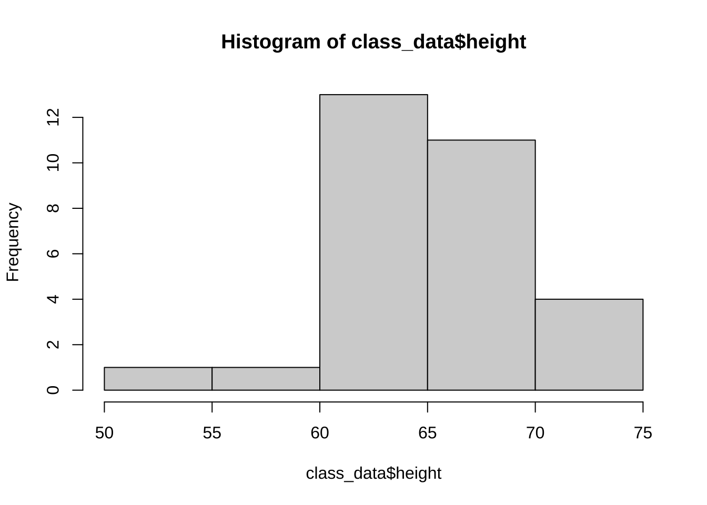
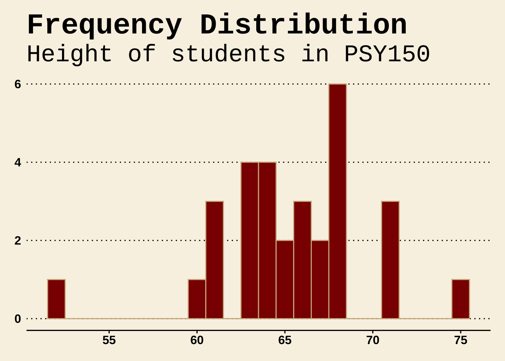
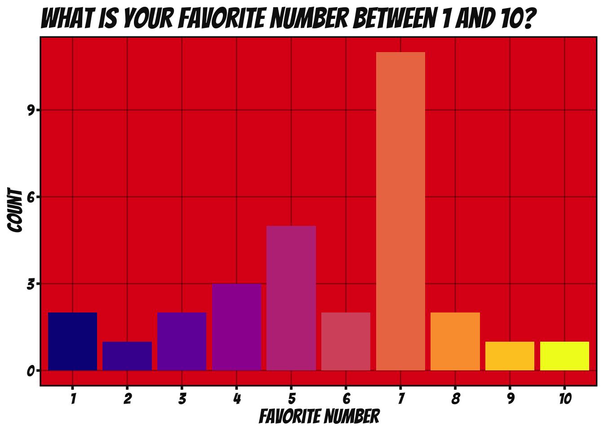
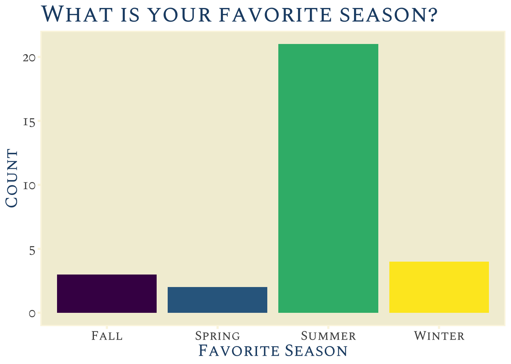
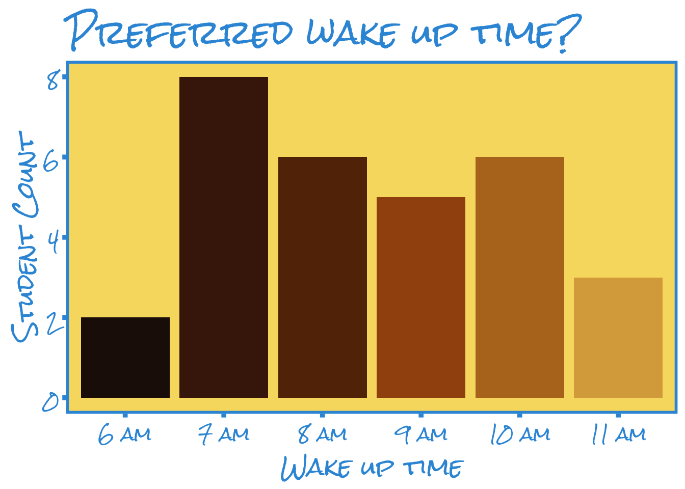
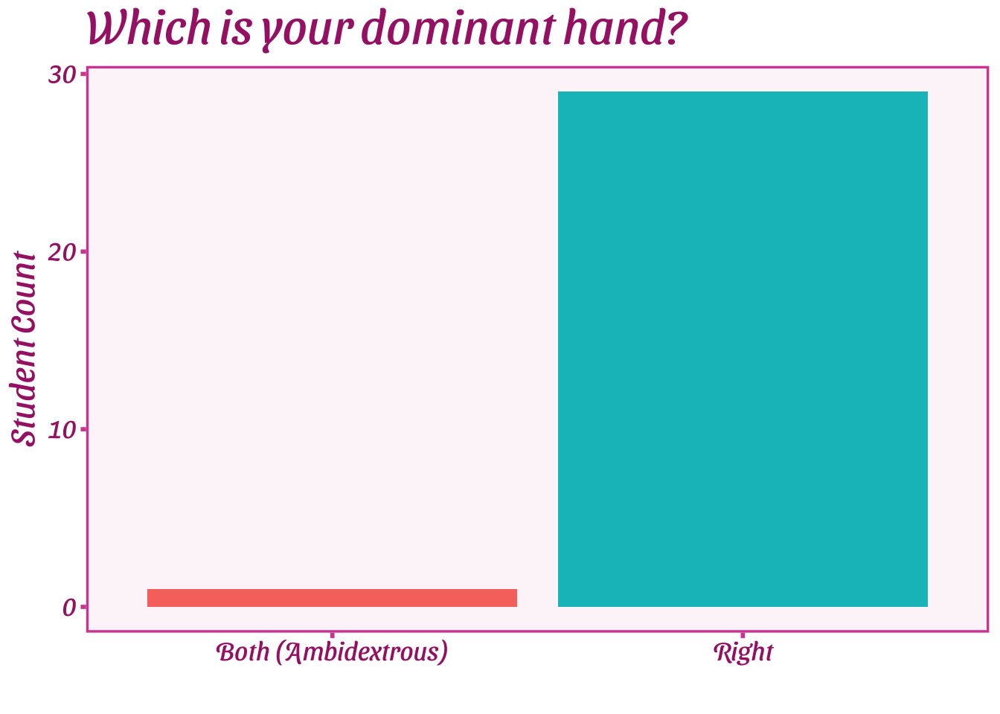
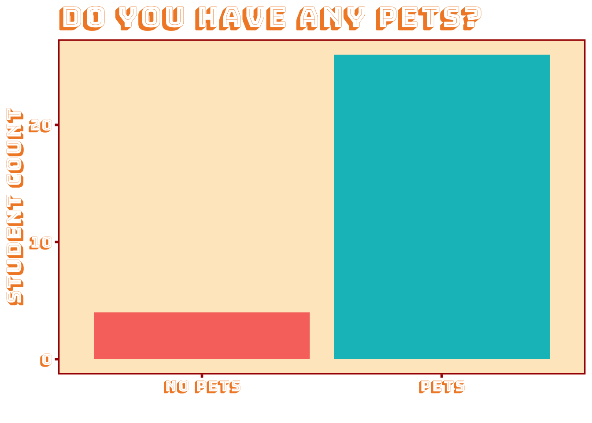
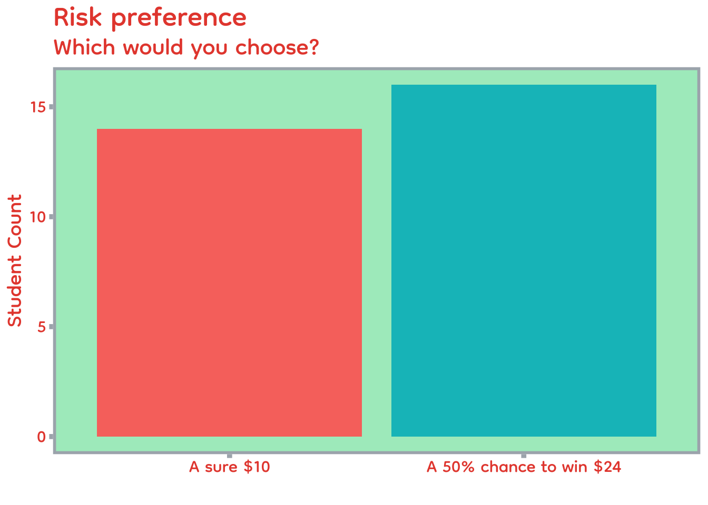
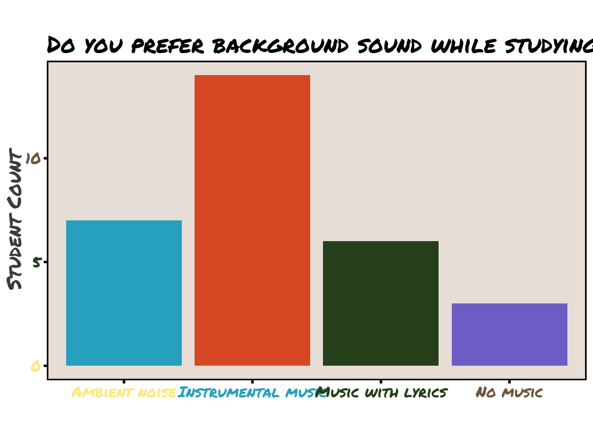

# If yellow banner appeared & you clicked 'yes': SKIP A. / Start at B.
# A.
# c("tidyverse","here","janitor","ggthemes","ggridges","viridis") |>
# purrr::walk(~ if (!requireNamespace(.x, quietly = TRUE)) install.packages(.x))
# B.
install.packages("remotes")
remotes::install_github("MatthewBJane/ThemePark")Code-along → Explore & Get Started in R
Lab - Week 1 - PSY 150
📦 Packages: Install once… load libraries every time!
- If a
yellow bannerappears at top of screen, asking you to install packages clickYES - Packages include functions other R users have made for us to make our lives easier!
Install packages
# Step 2: Load packages
library(tidyverse)
library(here)
library(janitor)
library(ggthemes)
library(ggridges)
library(viridis)
library(ThemePark)Keyboard shortcuts (Use them!)
MAC / WINDOWS
Run code(at cursor): COMMAND/CONTROL + RETURN/ENTERPipe operator(|>): COMMAND/CONTROL + SHIFT + MAdd code chunk: COMMAND/CONTROL + OPTION/ALT + IAssignment operator(<-): OPTION/ALT + MINUS(“-”)Search: COMMAND/CONTROL + F
Read in the class survey data
class_data <- read_csv(here("data", "psy150_survey_data.csv")) |>
mutate(across(c(fav_number, fav_season, pets, dominant_hand, risk_pref, study_sound), as.factor))Create a first plot in R using ggplot
Pets ↔︎ Height: Is height related to having pets?
class_data |>
ggplot(aes(x = height, y = pets, fill = pets)) +
geom_density_ridges(alpha=.9) +
labs(title = "Is height & having pets related?",
caption = "Height (inches)",
x="", y="" ) +
scale_fill_nemo_d() +
theme_nemo() +
theme(legend.position = "none") 
Exploring classroom height
Survey question: What is your height (inches)?
Take a look at the values in the variable height within the data.frame named class_data
class_data$height [1] 65 61 61 63 66 68 60 68 71 66 52 68 65 64 67 63 68 64 64 63 66 71 68 71 64
[26] 67 61 63 75 68Next let’s look at height as a frequency table
tabyl(class_data$height) class_data$height n percent
52 1 0.03333333
60 1 0.03333333
61 3 0.10000000
63 4 0.13333333
64 4 0.13333333
65 2 0.06666667
66 3 0.10000000
67 2 0.06666667
68 6 0.20000000
71 3 0.10000000
75 1 0.03333333Make a fast histogram using the function hist()
hist(class_data$height)
Make a histogram using ggplot for variable height
class_data |>
ggplot(aes(height)) +
geom_histogram(
binwidth=1,
fill = "darkred",
color = "tan"
) +
theme_wsj() +
labs(title = "Frequency Distribution",
subtitle = "Height of students in PSY150",
x = "Height (inches)",
y = "Student count (frequency)")
R is just a fancy calculator - measures of central tendency
- Calculate the mean (“the average”)
- Find the median (“the middle”)
- Find the mode (“the most common”)
1. Calculate the average (mean)
sum(class_data$height)/length(class_data$height)[1] 65.36667There is also a function for that:
mean(class_data$height)[1] 65.366672. Finding the median
# Step 1: Order values from lowest to highest
sort(class_data$height) [1] 52 60 61 61 61 63 63 63 63 64 64 64 64 65 65 66 66 66 67 67 68 68 68 68 68
[26] 68 71 71 71 75# Step 2: Find the middle value(s)Response:_________ADD_YOUR_RESPONSE___________
There is also a function for that:
median(class_data$height)[1] 65.53. Finding the mode (“most common value”)
NOTE: There can be multiple modes (if there is more than 1 highest frequency)
# Step 1: Make a frequency table
tabyl(class_data$height) class_data$height n percent
52 1 0.03333333
60 1 0.03333333
61 3 0.10000000
63 4 0.13333333
64 4 0.13333333
65 2 0.06666667
66 3 0.10000000
67 2 0.06666667
68 6 0.20000000
71 3 0.10000000
75 1 0.03333333# Step 2: Find the highest frequency Response:_________ADD_YOUR_RESPONSE___________
Hmmm… there is no function for that.
So let’s write a simple function ourselves!
# Step 1: Write your own function
get_modes <- function(x) {
freq_table <- tabyl(x)
freq_table |>
filter(n == max(n)) |>
pull(x)
}
# Step 2: Plug the input into your new function
get_modes(class_data$height)[1] 68Favorite number
Survey question: What is your favorite number between 1 and 10?
class_data |>
ggplot(aes(x = fav_number, fill = fav_number)) +
geom_bar() +
labs(title = "What is your favorite number between 1 and 10?",
x = "Favorite Number",
y = "Count") +
theme_spiderman() +
scale_fill_viridis_d(option = "C") + # or use "D", "E", etc. for different colors
guides(fill = "none")
Response:_________ADD_YOUR_RESPONSE___________
🍂 Favorite season
Survey question: What is your favorite season?
class_data |>
ggplot(aes(x = fav_season, fill = fav_season)) +
geom_bar() +
labs(title = "What is your favorite season?",
x = "Favorite Season", y = "Count") +
scale_fill_viridis_d(option = "D") +
theme_zelda() +
guides(fill = "none")
Response:_________ADD_YOUR_RESPONSE___________
⏰ Wake up time
Survey question: What is your preferred wake up time?
class_data |>
mutate(wake_up_time =
factor(wake_up_time,
levels = c("6 am", "7 am", "8 am", "9 am", "10 am", "11 am", "12 pm", "1 pm (or later)"),
ordered = TRUE)) |>
ggplot(aes(x = wake_up_time, fill = wake_up_time)) +
geom_bar() +
labs( title = "Preferred wake up time?",
x = "Wake up time",
y = "Student Count") +
scale_fill_dune_discrete() +
theme_simpsons() +
guides(fill = "none")
✋ Dominant hand
Survey question: Which is your dominant hand?
class_data |>
ggplot(aes(x = dominant_hand, fill = dominant_hand)) +
geom_bar() +
labs(
title = "Which is your dominant hand?",
x = "",
y = "Student Count"
) +
theme_barbie() +
theme(legend.position = "none")
Response:_________ADD_YOUR_RESPONSE___________
🐶 Pets
Survey question: Do you have any pets?
class_data |>
ggplot(aes(x = pets, fill = pets)) +
geom_bar() +
labs(
title = "Do you have any pets?",
x = "",
y = "Student Count"
) +
theme_asteroid_city() +
theme(legend.position = "none")
🎲 Risk/reward preference
Survey question: Which would you choose?
- A sure $10
- A 50% chance to win $24
class_data |>
mutate(risk_pref = fct_rev(risk_pref)) |>
ggplot(aes(x = risk_pref, fill = risk_pref)) +
geom_bar() +
labs(
title = "Risk preference",
subtitle = "Which would you choose?",
x = "",
y = "Student Count"
) +
theme_futurama() +
theme(legend.position = "none")
🎶 Study sound
Survey question: Do you prefer background sound while studying?
class_data |>
ggplot(aes(x = study_sound, fill = study_sound)) +
geom_bar() +
labs(
title = "",
subtitle = "Do you prefer background sound while studying?",
x = "",
y = "Student Count"
) +
scale_fill_friends_d() +
theme_friends() +
theme(legend.position = "none")